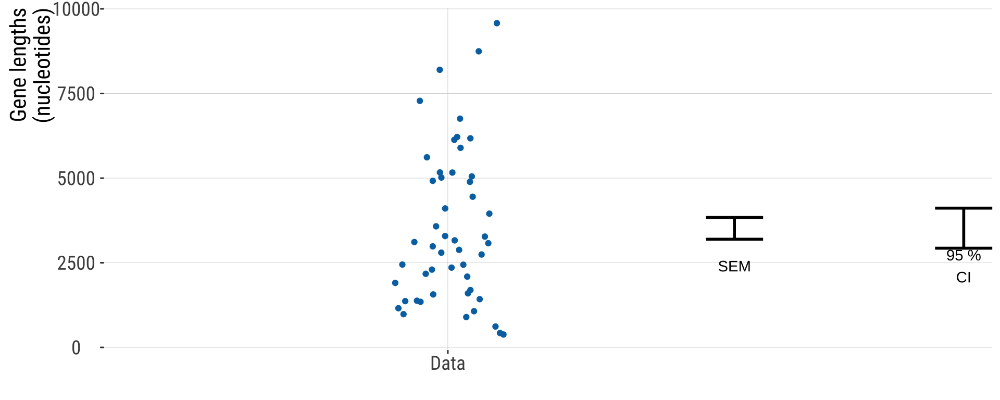
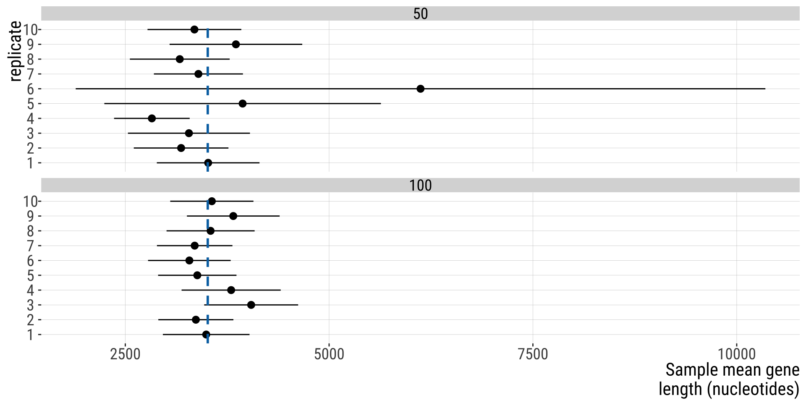
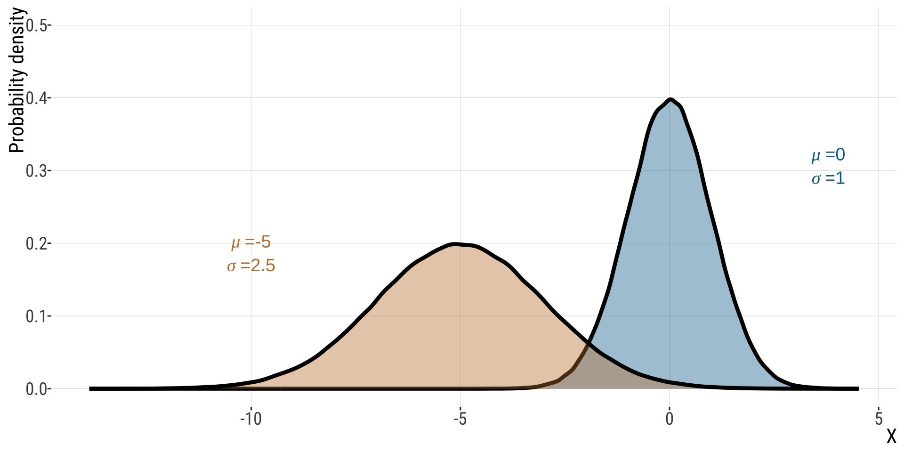
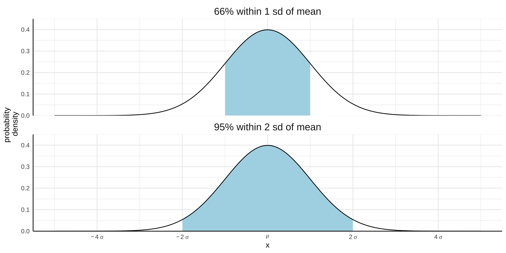
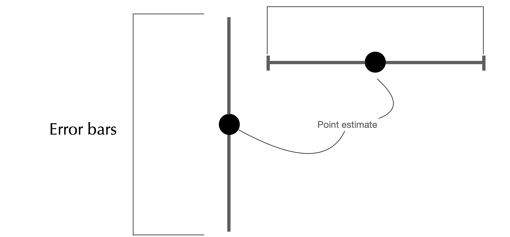
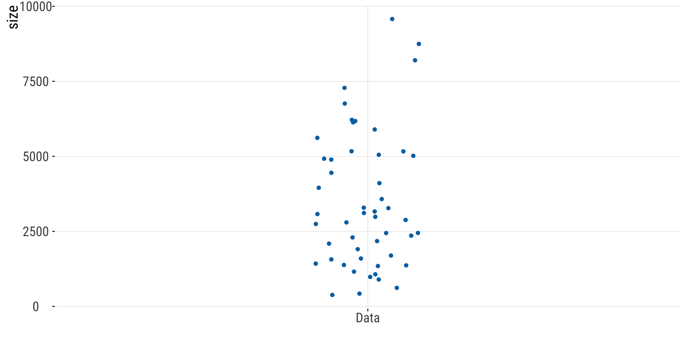
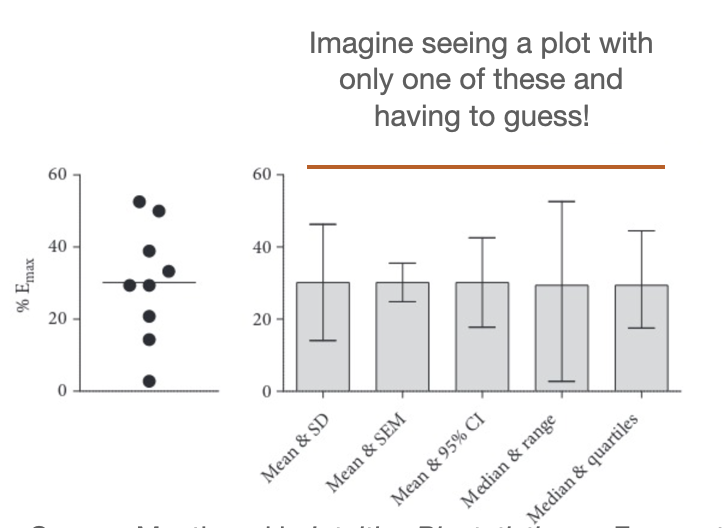

4.4.Estimating with uncertainty
Confidence Intervals, Error bars, pseudoreplication
October 29, 2026
Acknowledgments
Some code and slide content was borrowed from Yaniv Brandvain and Michael Whitlock.
Some content is based on the WS textbook.
-
Pseureplication:
Outline
Confidence Intervals (CI) - cont.
Error bars
Pseudoreplication
Web Apps:
I highly recommend using these:
Web app from the book:
- Sampling Distribution: https://www.zoology.ubc.ca/~whitlock/Kingfisher/SamplingNormal.htm
- CI: http://www.zoology.ubc.ca/~whitlock/Kingfisher/CIMean.htm – Note: this uses the method involving the Normal distribution. If you click on calculations you will see it. We will learn that later.
Other apps: - https://shiny.abdn.ac.uk/Stats/apps/app_sampling/ This allows you to do something very similar as to what I did in the slides, step by step. - https://istats.shinyapps.io/SampDist_Prop/ This allows you to explore the standard distribution of a proportion.
Why does the CI vary?
Sample size: all other things being equal, bigger \(n\) means lower CI
Confidence level: 0.90 gives narrower range than 0.95. In the long run, ~95% of 95% CIs estimated from random samples will include the population parameter of interest!
Random sampling: just like point estimates such as the mean, are prone to the randomness of a given sample
Example: gene lengths
Effect of sample size
95% CI for the mean:

How do we calculate CIs?
Two ways, mainly:
- If certain assumptions are met (more on this soon), we will learn in a few weeks how to do it using properties of the normal distribution
For all other cases:
- Bootstrapping (resampling)
2SE rule of thumb
If certain conditions are met, we can estimate a rough approximation to the 95% CI of the population mean as: \(\bar{X}-2\times SEM < \mu < \bar{X} + 2\times SEM\)
Assumptions:
Sample is random (equality and independence)
Normal distribution of the statistic of interest (the mean).
Normal Distribution
- The normal is symmetric around its mean
- The normal has a single mode
- The probability density is highest exactly at the mean.

Central Limit Theorem (CLT)
For the statistic of interest (mean) to be normally distributed, one of these two suffices:
- the population raw values are already normally distributed
- (e.g., human height is normally distributed and as a consequence the sampling distribution of mean heights is also normally distributed)
OR
- your sample size is large enough that the statistic of interest is normally distributed due to the CLT, even if your original population of raw values are not (e.g. human gene lengths).
For very large samples, the CLT assumption is generally fulfilled. See here.
Why 2SEM?

Note: these are approximations, not exact percentages.
Note
Whenever you use the rule of thumb you should state it as such and justify its use.
Later in the course we will learn how to calculate actual CIs using the Normal distribution. These assumptions also applies to the classical approach, that uses the Normal distribution to get more precise estimates than the rule of thumb does.
CI: Q&A
Q: When can I use the rule of thumb that the CI equals the sample mean plus or minus 2 SDs?
Never! In a Gaussian distribution you expect about 95% of the individual values to lie within 2 SD of the mean. But the idea of a CI is to quantify how precisely you know the population mean. For that, you need the sample size to be taken into account.
Q:When can I use the rule of thumb that the CI equals the sample mean plus or minus 2 SEM?
When \(n\) is sufficiently large and the population variable of interest is normally distributed (approximately). We will come back to this. If in doubt, don’t use it!!! [if you do, acknowledge this shortcoming]
Two different goals: estimation vs. hypothesis testing
Estimation
What is the value of a population parameter?
How uncertain is that estimate?
How large is the effect?
Hypothesis testing
Is the population parameter consistent with a specific value?
Is the observed effect plausibly due to random variation alone?
Estimation emphasizes magnitude and uncertainty; hypothesis testing emphasizes compatibility with and overall support for a specific model.
Error bars
What are they?
Lines that extend from a point estimate to reflect the degree of uncertainty of the parameter being estimated

What do they measure?
A measure of uncertainty:
- Confidence intervals
- 1 Standard error
- 2 Standard errors
Only use error bars to convey uncertainty, not spread!
- Standard deviation is a measure of spread/variability, not of uncertainty.
If goal is to show variation among data
If =< 100 data points: just plot it all in a strip chart (remember to add jitter and transparency)
Otherwise, to avoid clutter: violin plot, CFD, boxplot

If goal to show how precisely you have estimated a parameter
Use CI (easier to interpret, wider) or SEM (narrower, harder to interpret) to compare,e.g.:
two or more means
your estimate vs. model predictions
Example: showing that the second plague (Yersinia pestis) pandemic shaped the gene pool of certain populations

Mistake: Plotting error bars without defining how bars were computed
How will your reader know if it’s the SD, SEM, CI, range, or something else?

Source: Mentioned in Intuitive Biostatistics as Frazer et al. (2006),a study of the bladder-relaxing effects of norepinephrine in old rats.
Pseudoreplication: when your confidence is unwarranted
Recommended readings: WS Interleaf 2; https://stats.libretexts.org/
Replication vs. Pseudoreplication
True replication refers to having more than one experimental (or observational) unit with the same treatment. Each unit with the same treatment is called a replicate.
this is good and desirable
permits the estimation of variability within a treatment. Without estimating variability within treatments, it is impossible to do statistical inference.
Replication vs. Pseudoreplication
Pseudoreplication is the error that occurs when samples are not independent, but they are treated as though they are.
Often happens when multiple measurements come from the same experimental unit (e.g., repeated measures, subsamples, clustered data)
Inflates the apparent sample size, leading to confidence intervals that are too narrow (and artificially low p-values)
Tl;dr: false sense of precision about the population parameter

This is not an uncommon issue in published papers
\(\sim 1 \text{ in } 8\) (12.5%) field ecology studies (Hurlbert & White, 1993; Heffner et al. 1996)
\(\sim 40\)% for animal experiments (Lazic et al. 2018)!
A great example
“The flaw can be seen by considering the limiting case in which n = 1; a single animal is used in each group. Imagine that 100 cells are studied from each of two animals. The standard error of the mean is (SD / √number of cells), here equal to 0.1 SD. This very small value will mean that even a modest difference in the average value of the two animals can result in an apparently statistically significant difference. This would be equivalent to addressing the question of whether blood pressure is different in people who live in London and New York by studying one individual from each city and measuring her blood pressure 100 times.” –Eisner (2021). https://doi.org/10.1085/jgp.202012826 # Why is this so common?
Pseudoreplication problems arise from the organisational complexity of life itself. (Lazic et al. (2018)
Example 1
Suppose a blood-pressure lowering drug is administered to a patient, then the patient’s blood pressure is measured twice. This is a repeated measure, not a replication. It can give information about the uncertainty in the measurement process, but not about the variability in the effect of the drug. On the other hand, if the drug were administered to two patients, and each patient’s blood pressure was measured once, we can say the treatment has been replicated, and the replication may give some information about the variability in the effect of the drug.
Example 2
A researcher is studying the effect on plant growth of different concentrations of CO2 in the air. She needs to grow the plants in a growth chamber so that the CO2 concentration can be controlled. He has access to only two growth chambers, but each one will hold five plants. However, since the five plants in each chamber share whatever conditions are in that chamber besides the CO2 concentration, and in fact may also influence each other, they are not independent replicates but are pseudoreplicates. The growth chambers are the experimental units; the treatments are applied to the growth chambers, not to the plant independently.
Recommendations
How to Avoid Pseudoreplication
Identify the experimental unit: the unit that is independently sampled (e.g., individual climbers, plots, animals)
Do not treat repeated measurements or subsamples from the same unit as independent data points
-
When you have multiple measurements per unit:
Average within each unit before analysis, or
Use a statistical approach that accounts for non-independence (e.g., paired or repeated-measures designs)
Always report and base inference on the true sample size, not the number of raw measurements
Estimation - Summary
Parameter estimates are influenced by chance.
The sampling distribution considers what could have happened upon sampling.
The standard error is the standard deviation of the sampling distribution.
Confidence intervals bound plausible parameter values.
Uncertainty decreases and precision increases with sample size.
Add error bars to graphs to illustrate standard errors or confidence intervals. Make sure to clarify which is being illustrated in the figure legend.
Pseudoreplication violates independence, inflates sample size, and produces misleadingly narrow confidence intervals